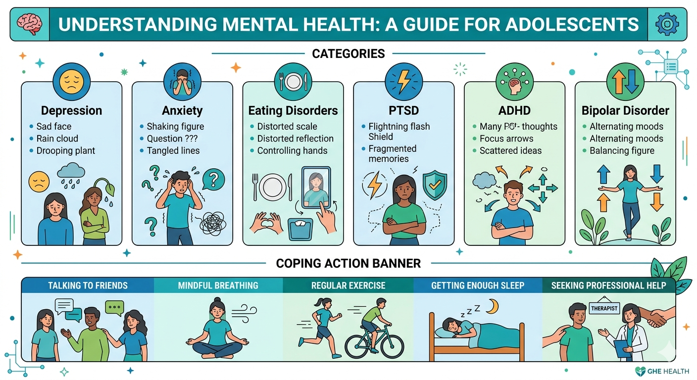

01
Risk is probabilistic
A risk factor can increase vulnerability without determining what will happen to an individual.
Mental health is influenced by much more than individual choices. Explore risk across the life course and from SELF → FAMILY & PEERS → COMMUNITY → COUNTRY → WORLD.

Step 4 asks us to move beyond individual explanations and examine the conditions that shape mental health.
Understand the foundations.
Understand common conditions.
Discover what supports wellbeing.
Explore risk and inequality.
Turn knowledge into action.
A risk factor is something associated with an increased likelihood of a health problem. Risk factors may be biological, psychological, behavioural, social, environmental or structural.
A risk factor can increase vulnerability without determining what will happen to an individual.
Multiple risks can accumulate or interact across different stages of life.
The same exposure may affect people differently depending on resources, relationships and social circumstances.
GHE asks learners to look progressively outward—from personal experiences to global forces.
Biology, previous experiences, chronic stress, health behaviours, sleep difficulties and other individual factors can influence vulnerability.
Family conflict, bullying, social exclusion, relationship difficulties and lack of support can affect wellbeing.
Unsafe neighbourhoods, discrimination, social isolation, limited recreation and lack of accessible services can influence mental health.
Poverty, unemployment, inequality, education systems, social protection and health-service access shape opportunities for wellbeing.
Conflict, displacement, humanitarian emergencies, climate change, pandemics and global inequality can affect mental health across populations.
Mental health and noncommunicable diseases are interconnected. Some social and behavioural conditions can influence both.
Physical activity supports cardiovascular health and can also contribute to mental wellbeing.
Persistent stress can affect sleep, emotional wellbeing, behaviour and physical health.
Poverty, exclusion and unsafe environments can influence both mental and physical health outcomes.
Equity asks whether people have fair opportunities to achieve health. Different populations may experience different exposures, resources and barriers.
Ask four questions:
Stereotypes, discrimination and exclusion can affect belonging, opportunities and willingness to seek support.
Challenging stigma is therefore not simply an act of kindness—it can also be an important public-health action.
Reducing preventable risks contributes to health and wellbeing.
Mental-health equity requires addressing unequal exposures and barriers.
Education can influence both opportunities and health.
Safety, human rights and responsive institutions are fundamental determinants.
NextGenU's Introduction to Psychology provides a deeper educational pathway into health psychology, stress, coping, mental health and psychological disorders.
Correct answer: B. No. Risk factors increase vulnerability but do not determine an individual's outcome.
Correct answer: C. Persistent conflict or lack of supportive relationships.
Correct answer: A. Safety, inclusion and availability of community resources.
Correct answer: D. Whether people have fair opportunities and whether barriers are distributed unequally.
Correct answer: B. Poverty can affect exposure to stressors, resources, housing, education and access to services.
Correct answer: C. It can contribute to discrimination, exclusion and barriers to support.
Correct answer: A. Conflict and humanitarian emergencies can affect populations' mental health.
Correct answer: D. They share interacting biological, behavioural, environmental and social determinants.
Correct answer: B. SDG 10 — Reduced Inequalities.
Correct answer: A. Consider interacting factors from the individual level through family, community, country and world.
Continue to the final page of the five-page pathway.